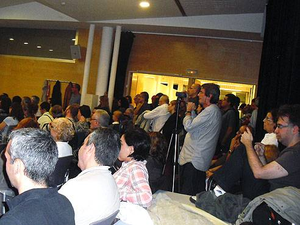
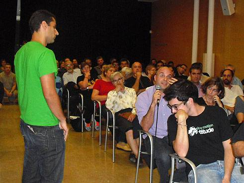
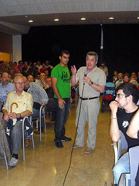

què vol aquesta tropa?
un nou estat d'Europa!
què vol aquesta gent?
Catalunya independent!
imatges
de divendres 19 d'octubre 2012
La independència, a debat. Què hi diuen els partits polítics?



si algú en vol alguna
que ho digui
tornar